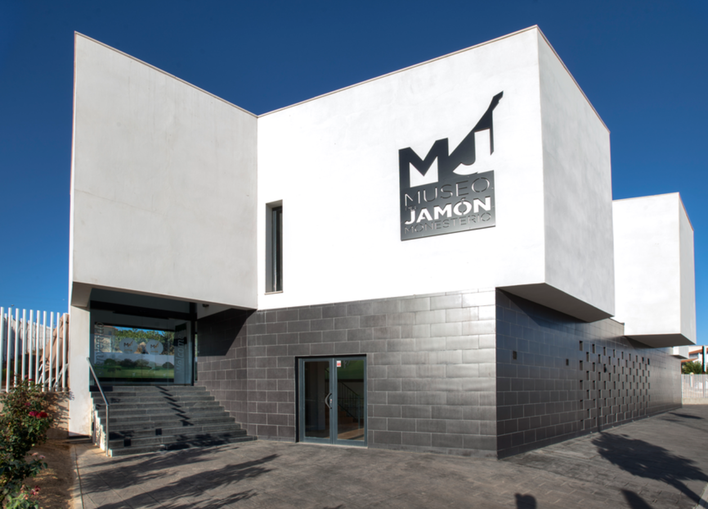
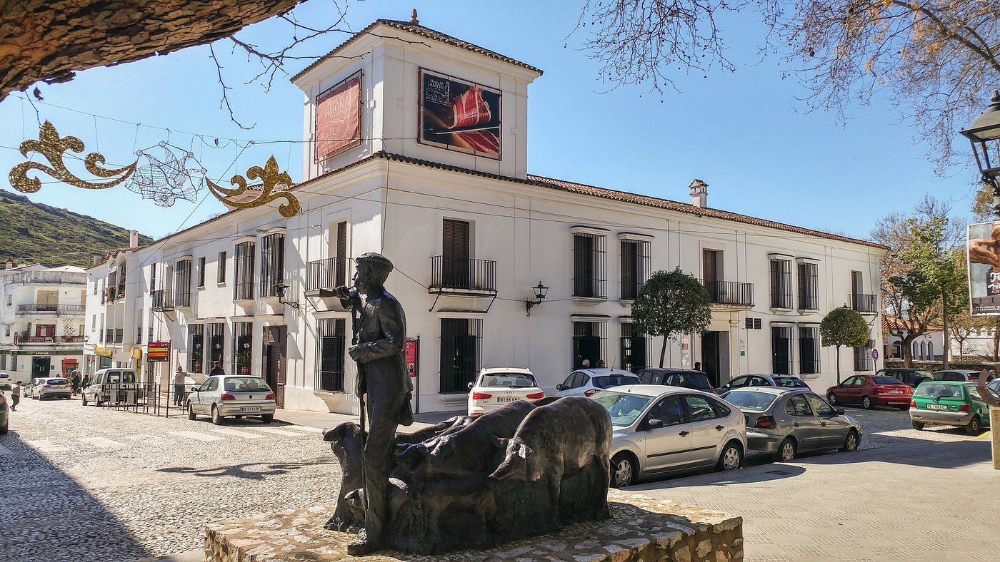
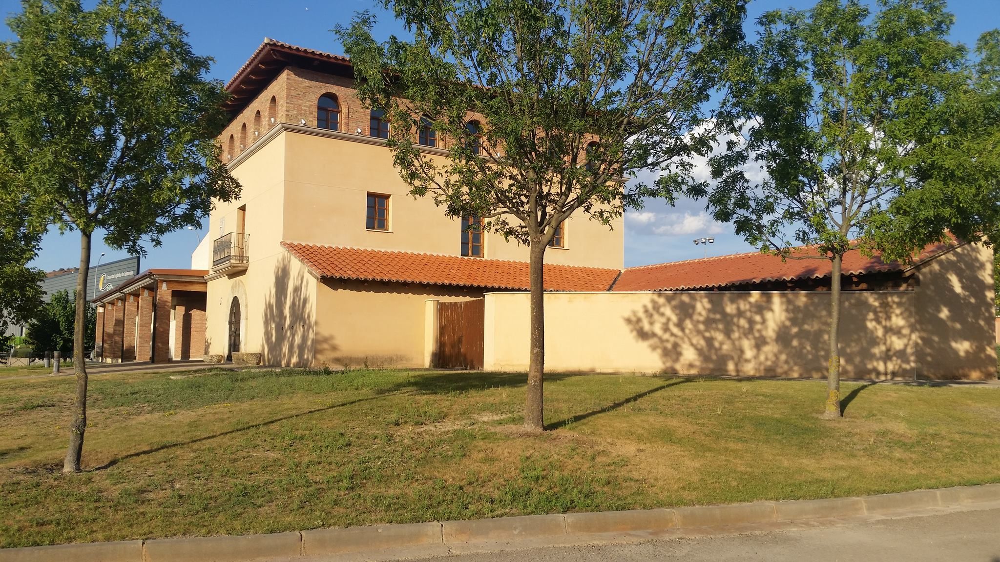
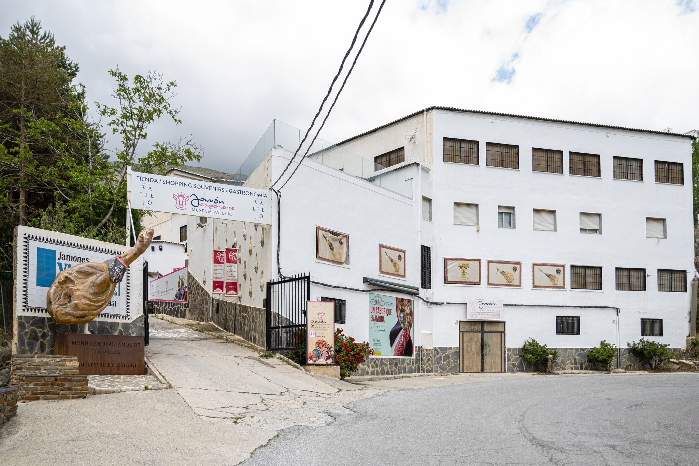

España es famosa por su jamón ibérico, y qué mejor manera de aprender sobre este
delicioso producto que visitando algunos de los mejores museos dedicados al jamón
en el país. A continuación, te presentamos cuatro museos destacados que no te puedes perder.
¿Eres amante del jamón ibérico?
Únete a nuestra comunidad y recibe noticias, visitas exclusivas y mucho más.
Crear mi cuenta
Museo del Jamón en Monesterio (Badajoz)

El Museo del Jamón Ibérico es un espacio que da a conocer el producto emblemático de la localidad
de Monesterio: El Jamón Ibérico de bellota. La visita por este centro ofrece un recorrido cargado
de experiencias a lo largo de dos plantas, en las que el visitante viajará desde la dehesa y la raza
ibérica que habita en ella, hasta la matanza tradicional e industrial. Conocerá los aprovechamientos
del cochino ibérico, entre los que destaca el jamón ibérico de bellota como producto estrella.
Visitar sitio web →
Museo del Jamón en Aracena (Huelva)

El Museo del Jamón de Aracena abre sus puertas como Centro de Interpretación del Cerdo Ibérico,
concebido para proporcionar información y difundir, de manera didáctica, toda una cultura milenaria
y serrana heredada de padres a hijos. A través de sus siete salas nuestro visitante irá descubriendo,
poco a poco, a nuestro protagonista: el cerdo ibérico.
Visitar sitio web →
Museo del Jamón en Calamocha (Teruel)

Ubicado en un moderno edificio dentro del polígono agroalimentario de la localidad de Calamocha,
El Museo del Jamón pretende mostrar el "saber hacer" tradicional y un homenaje al papel desempeñado
por la mujer en la gestión doméstica y elaboración de los alimentos en cualquier hogar tradicional.
El recorrido se inicia con una descripción de la vivienda tradicional. El Museo cuenta, además, con
la recreación de unas cuadras y un corral típico.
Visitar sitio web →
Museo del Jamón en La Alpujarra (Granada)

Museum Vallejo es un centro temático del jamón en Trevélez dedicado al mundo del jamón.
Viva con nosotros la historia de este producto emblemático de la gastronomía española.
Visita el secadero y museum de jamones más antiguo de la alpujarra.
Visitar sitio web →